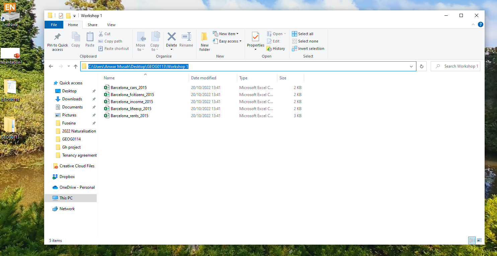
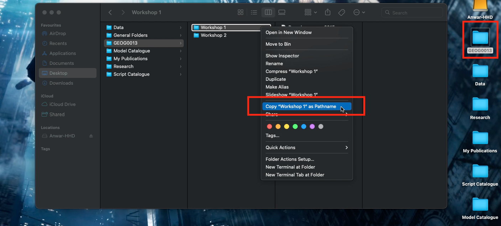
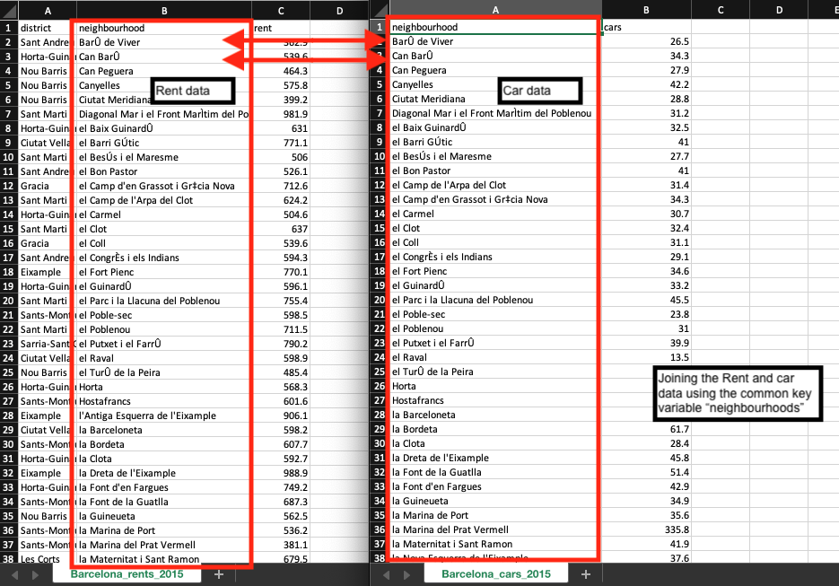

Part 2: Basics of Managing Data in RStudio
Data entry & column generation (Length: 19:23 minutes)
Watch on YouTube [LINK]
How do we enter data into RStudio?
As you have already seen, RStudio is an object-oriented software package and so entering data is slightly different for the usual way of inputting information into a spreadsheet (e.g., Microsoft Excel). Here, you will need to enter the information as a Vector object before combining them into a Data Frame object.
Consider this crude example of data containing the additional health information for 4 people. It contains the variable (or column) names ‘id’, ‘name’, ‘height’, ‘weight’ and ‘gender’
| id | name | height | weight | gender |
|---|---|---|---|---|
| 1 | Kofi | 1.65 | 64.2 | M |
| 2 | Harry | 1.77 | 80.3 | M |
| 3 | Huijun | 1.70 | 58.7 | F |
| 4 | Fatima | 1.68 | 75.0 | F |
Now, when entering data to RStudio it is not like Microsoft Excel where we enter data into the cells of a spreadsheet. In RStudio, data is entered as a sequence of elements and listed inside an object called a vector. For instance, if we have three age values of 12, 57 and 26 years, and we want to enter this in RStudio, we need to use the combine function c() and combine these three elements into a vector object. Hence, the code will be c(12, 57, 26). We can assign this data by typing this code as age <- c(12, 57, 26). Any time you type ‘age’ into RStudio console it will hence return these three values unless you chose to overwrite it with different information.
Let us look at this more closely with the 'id' variable in the above data. Each person has an ID number from 1 to 4. We are going to list the numbers 1, 2, 3 and 4 as a sequence of elements into a vector using the combine function c() and then assign it to as a vector object calling it 'id'.
# Create 'id' vector object
id <- c(1, 2, 3, 4)
# Type the vector object 'id' in console to see output
idNow, let us enter the information the same way for the remaining columns for ‘name’, ‘height’, ‘weight’ and ‘gender’ like we did for ‘id’:
# Create 'name' vector object
name <- c("Kofi", "Harry", "Huijun", "Fatima")
# Create 'height' (in meters) vector object
height <- c(1.65, 1.77, 1.70, 1.68)
# Create 'weight' (in kg) vector object
weight <- c(64.2, 80.3, 58.7, 75.0)
# Create 'gender' vector object
gender <- c("M", "M", "F", "F")Now, that we have the vector objects ready. Let us bring them together to create a proper dataset. This new object is called a Data frame. We need to list the vectors inside the data.frame() function.
# Create a dataset (data frame)
dataset <- data.frame(id, name, height, weight, gender)
# Type the data frame object 'dataset' in console to see output
dataset
# You can also see dataset in a data viewer, type View() to data:
View(dataset)Important Notes: The column ‘id’ is a numeric variable with integers. The second column ‘name’ is a text variable with strings. The third & fourth columns ‘height’ and ‘weight’ are examples of numeric variables with real numbers with continuous measures. The variable ‘gender’ is a text variable with strings – however, this type of variable is classed as a categorical variable as individuals were categorised as either ‘M’ and ‘F’.
How do we create a variable based on other existing variables in our data frame?
To access a variable by its name within a data frame, you will need to first type the name of the data frame followed by a $ (dollar sign), and then typing the variable’s name of interest. For instance, suppose you just want to see the height values in the Console viewer - you just type:
We can use other columns or variables within our data frame to create another variable. This technique is essentially important when cleaning and managing data. From this dataset, it is possible to derive the body mass index bmi from height and weight using the formula:
To generate bmi into our data frame, we would need to access the height (m) and weight (kg) columns using the $ from the data frame its stored to, and apply the above formula as a code to generate the new bmi column:
# Create 'bmi' in the data frame i.e.,'dataset' and calculate 'bmi'
# using the $weight and $height
dataset$bmi <- dataset$weight/((dataset$height)^2)
# View the data frame ‘dataset’ and you will see the new bmi variable inside
View(dataset)You can overwrite the height (m) column to change its units into centimeters by multiplying it to 100; equally, the weight (kg) column can be overwritten and converted from units of kilograms to grams by multiplying it to 1000.
How to set the working directory with setwd() function?
Set-up work directory and importing data (Length: 25:43 minutes)
Watch on YouTube [LINK]
IMPORTANT ACTION: Please download the data set for this practical by clicking here. Now, in your computer, please create a new folder on your desktop page and rename the folder to “GEOG0113”, and create another folder within “GEOG0013” and rename it as “Workshop 1”. Make sure to unzip and transfer ALL the downloaded data directly to the Workshop 1 folder.
Now, we are getting very serious here! This part of the practicals are probably the most important section of this tutorial. It’s usually the “make” or “break” phase (i.e., you ending up loving RStudio OR you hating it and not ever wanting to pick up R again).
We are going to learn how to set-up a working directory. This basically refers to us connecting the RStudio to the folder containing our dataset. It allows the user to tell RStudio to open data from a folder once it knows the path location. The path location specifies the whereabouts of the data file(s) stored within a computer. Setting your directory in RStudio beforehand makes life incredibly easier in terms of finding, importing, exporting and saving data in and out of RStudio.
To illustrate what a path location is – suppose on my desktop (mac/widows) there is a folder called “GEOG0013”, and within that folder, exists another folder called “Workshop 1”. Finally, suppose a comma separated value (.csv) data file called “Barcelona_rents_2015.csv” is store in this last folder i.e., Workshop 1. If via RStudio you want to open this CSV data file located in within the “Workshop 1” folder. You will need to first set the path to “Workshop 1” in RStudio using the setwd() function.
Therefore, the path location to this folder on a Windows machine would be written as follows, "C:/Users/accountName/Desktop/GEOG0013/Workshop 1". You can access this piece of information simply by:
- Open the GEOG0013 folder to reveal the Workshop 1 folder.
- Open the Workshop 1 folder in the data files are stored.
- Now, click on the bar at the top which shows
GEOG0013 > Workshop 1. This should highlight and show"C:\Users\accountName\Desktop\GEOG0013\Workshop 1"(see image below):

- Now, copy
"C:\Users\accountName\Desktop\GEOG0013\Workshop 1"and paste the path name into thesetwd()function in your R script. - Lastly, change all the back slashes
\in the path name to forward slashes/and run the code. It should look like this:setwd("C:/Users/accountName/Desktop/GEOG0013/Workshop 1").
For Windows, the setwd() is as follows:
For MAC users, its marginally different. The path location would be written as follows, "/Users/accountName/Desktop/GEOG0013/Workshop 1". You can access this piece of information simply by:
- Right-clicking on the folder “Workshop 1” (not file) in which the files are stored.
- Hold the “Option”
⌥key down

- Click
Copy "filename" as Pathname - Paste the copied path name into the function
setwd()and run the code
For Mac, the setwd() is as follows:
This should set the working directory. Alternatively, if the setwd() is problematic - you can do this manually. See short video below.
Setting Work Directory Manually if Using the setwd() function is problematic (Length: 3:58 minutes)
Watch on YouTube [LINK]
IMPORTANT ACTION: Again, please make sure to have downloaded the data set for this practical by clicking here. Also, in your computer, please make sure you have already created a new folder on your desktop page and renamed the folder to “GEOG0113”, and have also created another folder within “GEOG0013” and have renamed that to “Workshop 1”. Make sure to unzip and transfer ALL the downloaded data directly to the Workshop 1 folder.
Now, let us learn how to import a CSV data into RStudio.
Importing data using read.csv()
As you will be working mostly with comma separated value formatted data (i.e., csv) we will therefore learn how to import and export in RStudio. There are two files that we are going to import into RStudio from Week 1’s folder:
Barcelona_cars_2015.csvwhich contains an indicator for proportion of car ownership in 73 Spanish neighbourhoods in Barcelona in 2015.Barcelona_rents_2015.csvwhich contains an indicator for average monthly rent (in euros) spent in 73 Spanish neighbourhoods in Barcelona in 2015.
To import a csv into RStudio, we use the read.csv() function. To demonstrate this, let us import the data for average monthly rents into an data frame object and name it as Rent_data
# Import data using read.csv() function
Rent_data <- read.csv(file="Barcelona_rents_2015.csv", header = TRUE, sep = ",")Just in case…suppose if we did NOT set the working directory earlier. We would have to go through the hassle of typing the path location in the read.csv().
For windows:
Rent_data <- read.csv(file="C:/Users/accountName/Desktop/GEOG0013/Workshop 1/Barcelona_rent_2015.csv", header = TRUE, sep = ",")For Mac:
Rent_data <- read.csv(file="/Users/accountName/Desktop/GEOG0013/Workshop 1/Barcelona_rent_2015.csv", header = TRUE, sep = ",")I do not recommend doing it this way. Just set the work directory with setwd() to make life easier for yourself.
Important Notes: The arguments used in read.csv() function – 1.) ‘file =’ is a mandatory option where you quote the name of the file to be imported; 2.) ‘header = TRUE’ option is set to TRUE which is telling RStudio that the file that is about to be imported has column names on the first row so it should not treat as observations; and 3.) ‘sep = ","’ we are telling RStudio that the format of the dataset is comma separated.
We have imported the Barcelona_rents_2015.csv data. Now, let us import the second data for Barcelona_cars_2015.csv using the read.csv() function and call it Cars_data. The code would look something as follows:
Joining two datasets using the merge() function
Merging and saving datasets (Length: 23:15 minutes)
Watch on YouTube [LINK]
In your journey with data sets, you will certainly find yourself merging two or more data frames together, especially bringing together a spatial object with a non-spatial object. We cannot stress the importance of merging objects in the correct order so that the spatial attributes are preserved. It is possible to merge the two data frames uniquely using a common key variable like neighbourhoods that is present in both data sets.

This task can be done using the merge function merge(). Consequently, we want the format of the merge code to look something akin to this syntax merge(target_object, selected_object, by=”Key_variable”).
Merging data frames is indeed a very important technique to know especially if you need to bring together event information with no spatial dimension with actual spatial data. Alright, let’s merge the cars ownership information on the home rental records using the Key_variable column, and generate a bigger data frame that contains both the rental and car ownership information:
# Using the merge() function
Barcelona_data <- merge(Rent_data, Cars_data, by.x = "neighbourhood", by.y = "neighbourhood", all.x = TRUE)
# View the datasets
View(Barcelona_data)Important Notes: The arguments used in merge.csv():
Rent_datais the target data frame we want something to be merged on to.Cars_datais the selected data frame we are using to merge with theRent_data.by.x = “neighbourhood”option we are specifying the name of the join column from the target data frame i.e.,Rent_data.by.y = “neighbourhood”option we are specifying the name of the join column from the selected data frame i.e.,Cars_dataall.x=TRUEoption we are telling RStudio to retain all rows that are originally from the target data after merging regardless of whether or not they are present in the selected data frame. So even if a row from the selected data does not find a unique link with any of the rows in target data to match too - it will still preserve the target data frame by not discarding unlinked rows. But it will discard the unmatched rows from the selected data frame.
Saving your dataset using the write.csv() function
Let us save a version of this as a .csv file as a saved product named “Barcelona_Data.csv”. This can be done by using the write.csv() function. It will export the data frame object into a .csv format.
# Export ‘Barcelona_Data’ object as .csv into 'Week 1' folder
write.csv(Barcelona_Data, file = "Barcelona_Data.csv", row.names = FALSE)Important Notes: The arguments used in merge.csv():
Barcelona_Datais an object we are exporting. It is compulsory to specify the object data frame we want to exportfile =is a mandatory argument. We must give a name to the file we wish to export it as with.csvextension.row.names =this is an annoying argument! It will automatically index the dataset with unique row numbers by default if we do not specifyFALSE! Since the data has its own unique identifiers (i.e., neighbourhoods) we specify ‘FALSE’ to not perform this action of indexing
Again, suppose if you did NOT set the work directory to your folder, you will have to type the whole path location to where you want the data to be exported which could be a hassle:
For Windows:
write.csv(Full_data, file = "C:/Users/accountName/Desktop/GEOG0013/Workshop 1/Barcelona_data.csv", row.names = FALSE)For Mac:
write.csv(Full_data, file = "/Users/accountName/Desktop/GEOG0013/Workshop 1/Barcelona_data.csv", row.names = FALSE)Again, I do not recommend doing it this way. Just set the work directory with setwd() to make life easier for yourself and to avoid R calling you out for errors.
Now that we have learned a lot of the basic things in RStudio – the stuff shown in Part 2 will be used quite a lot moving forward in journey of studies. Now, let us progress to the meat and potatoes in *Part 3** where will start using RStudio for statistical analysis. Here, we will conduct some descriptive profile of the air quality using pollution data from Barcelona.
We’re in the final stretch now.